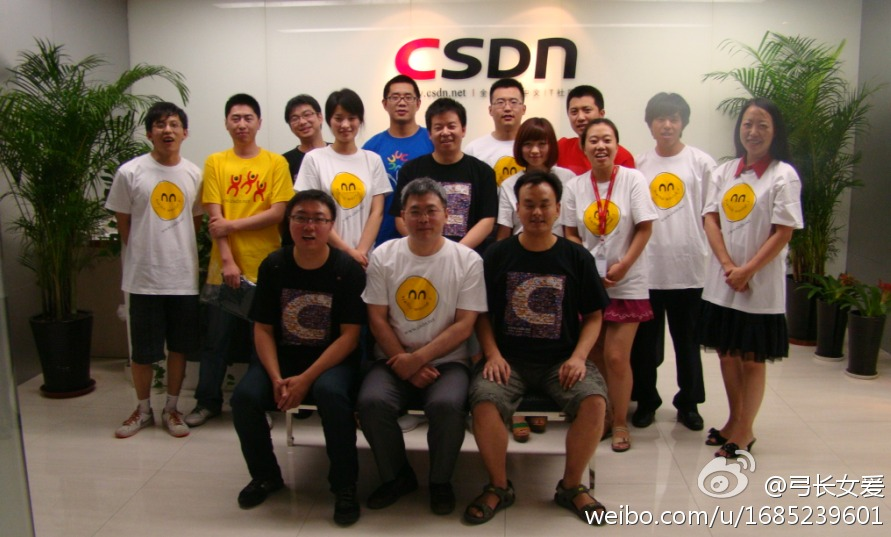

一些ID号终于和真人对上了。//@maco_wang: @姜泳涛 @Ada李力 @壹錁泙淉 @阿花君霸占路人 @十一文 @_屎壳郎_ 很happy的聚会，感觉时间过得超快。@张茉末:周六下午北京地区版主聚会，先在福码大厦CSDN公司聊了几个小时，然后去对面的汉斯烤肉腐败~~~大家都好nice，争取以后经常搞活动。照片和详情今天稍后放出！ 
//@吴朱华: 期待各位高手的简历，我们的待遇还是可以的，未来前景大家懂的无比求贤若渴//@吴朱华: 孔老师，我们会更努力的，不给你丢人//@孔华威: 靠谱公司 //@吴朱华: 嘻嘻，期待各位的关注，一起开创新的时代，而且我们这边最近也需要一个有1-2年R或者其他数据挖掘工具使用经---:抱歉，此微博已被作者删除。查看帮助： 网页链接
回复@ACOUG中国: //@ACOUG中国:提醒-Reminder，备忘-Notes，长期备忘及参考-Evernote；增强备忘及提醒（免费）-wunderlist；增强备忘及提醒（收费，可同步iCal）-doit.im；团队协作我推荐Tower，可以提醒，支持iPhone。以上都有电脑端和手机端。@Ada李力@Ada李力:每天琐事太多，得找个工具记录，不然很多事会忘掉。目前，感觉Google Tasks比较轻量，就是访问太慢，能方便访问邮件和日历，并有提醒功能，有Web端和手机客户端，还有什么好工具可以推荐？
偶就写不出这么传神的对话，太有创意了。 @maco_wang @姜泳涛 @十一文 @_屎壳郎_ @壹錁泙淉 @阿花君霸占路人 @弓长女爰 @高山_CSDN@张小良子:@奇奇快有男盆友了 @Ada李力 @门神盼 @西瓜皮小猪猪
#程序库不难，难的是社区意识#，改变人的观念太难了。//@八爪李炯明: #程序库不难，难的是社区！# @Ada李力 @蒋涛CSDN 看到这句话，我很开心～～！ //@Laruence:耗子是在吐槽阿里内部重复发明轮子现象严重么? ---:抱歉，作者已设置仅展示半年内微博，此微博已不可见。
“赋予意义”说得好。@麻辣情医吴迪:我得庆幸十几年前我还没有学习心理学，对婚姻还没怎么看透，一时糊涂结了婚。要是等到今天，做了9年两性关系心理咨询师，把男女关系和婚姻都看了个明明白白，还能跟谁结婚啊 婚姻这玩意就象信上帝，不能问为什么，信则有，不信则无；不能问有啥意义，本来人活着就没啥意义，是你赋予了意义